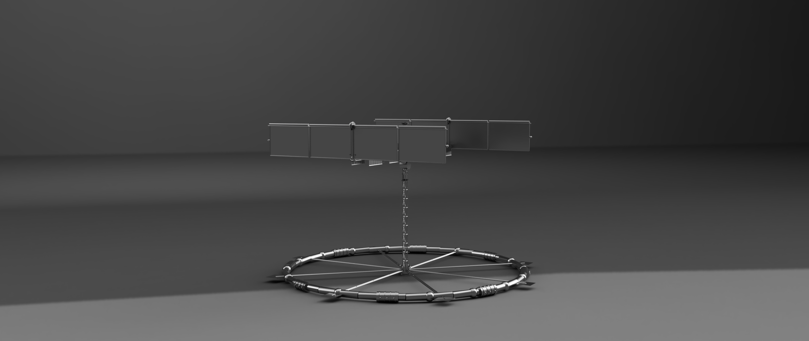

Current Project
My most recent and still ongoing project is ICON (ISRU Centrifugal Orbital Node).
The ISRU Centrifugal Orbital Node (ICON) is a conceptual design for a small,
permanently crewed station in Lunar orbit. Combining a zero-g main hull for docking,
logistics, refueling ports and workspace that functions with a rotating centrifuge pod
that provides artificial gravity for crew habitation. The station is designed around a
Near Rectilinear Halo Orbit (NRHO) for long term stability, in-situ resource utilization
(ISRU) of Lunar polar ice for propellant, and consumables, and a centrifuge
geometry chosen to keep rotational effects within established human comfort factor
limits. This document presents the station concept, its major subsystems and the full
set of governing engineering calculations used to size them.

This PDF file contains the full, current in-depth information about ICON.
Download PDF View FULL Project